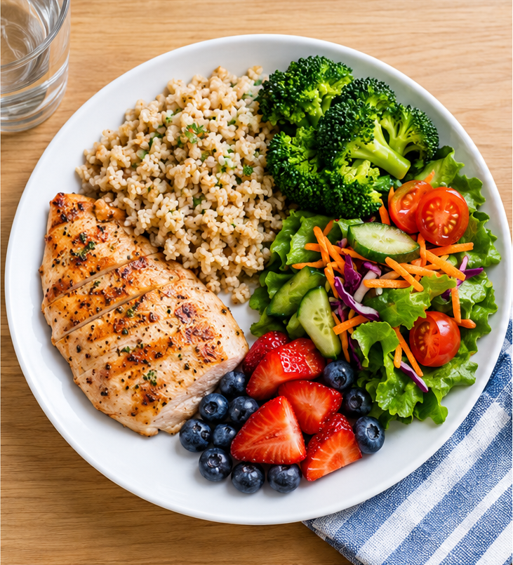
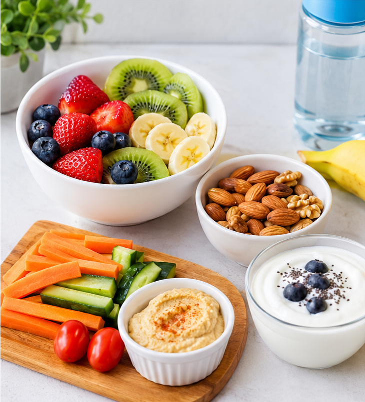

1. Balanced Meals
A balanced meal contains fruits, vegetables, proteins, grains, and other nutrients that help our body grow and stay healthy.

Learn more about healthy eating at World Health Organization .
Eat Healthy, Stay Healthy!
A balanced meal contains fruits, vegetables, proteins, grains, and other nutrients that help our body grow and stay healthy.

Learn more about healthy eating at World Health Organization .
Choose healthy snacks like fresh fruits, nuts, yogurt, and vegetables instead of eating too many sugary or processed snacks.

Water helps our body work properly. Drink water regularly throughout the day.
Fruits and vegetables provide vitamins, minerals, and fibre that help keep us healthy.
A healthy breakfast provides energy and helps you concentrate better at school.
Watch this video to learn more about healthy eating.
Do you have any questions or suggestions? Email us at:
nutritionblog@example.com